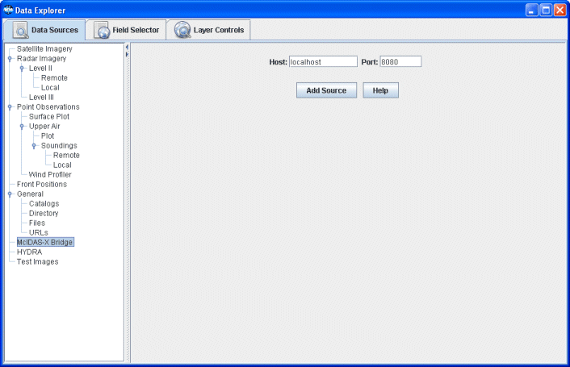

Creating a McIDAS-X Bridge Session
The McIDAS-X Bridge chooser allows you to create a McIDAS-X bridge session which provides a way to load data from an active McIDAS-X session (version 2007a or later) into McIDAS-V. For more information on using this chooser, see Getting Started.

Image 1: McIDAS-X Bridge Chooser
Properties
- Host:
- Enter in a host address or leave as localhost if connecting to a McIDAS-X session on your local machine.
- Port:
- Enter in a valid port number which corresponds to the McIDAS-X bridge listener.
- Add Source
- Click to load the McIDAS-X bridge session.
- Help
- Click to bring up this help page.